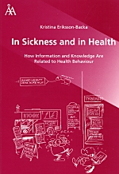

|  |
| About IR |
| Editors |
| Author instructions |
| Copyright |
| Author index |
| Subject index |
| Search |
| Reviews |
| Register |
| Home |
Eriksson-Backa, Kristina. In sickness and in health: how information and knowledge are related to health behaviour. Åbo (Turku), Finland: Åbo Akademi University Press, 2003. 205 p. ISBN 951-765-152-X (PhD dissertation). €.22.00
In the tradition of studying everyday life information seeking, Kristina Eriksson-Backa aims to examine the relationship between the existing level of health-related knowledge among Finns and their preference for health information sources on nutrition. In contrast to other studies, this study connects and tries to explore the interrelations among three components: health-related information, knowledge and behaviour. Specifically the study seeks to answer the following questions: Is there a relationship between the information sources a person uses and his existing knowledge on health and food, and if so, what is the relationship like? Is there a relationship between received or acquired information and knowledge on nutrition and health and the health and eating behaviour of an individual, and if so, what is the relationship like?
Chapters 2-8 in the thesis present a literature overview where central concepts and themes relevant to the study are included: health, knowledge, health knowledge, information and an overview of research about factors that can influence health behaviour, e.g., diabetes, pregnancy, work, gender, age, education, social environment, culture and attitude. According to Eriksson-Backa, the thesis takes a cognitive viewpoint, because it examines the relationship between different information sources and people's knowledge on health related issues. Information needs and seeking related to health issues are examined as well as media and information sources. Chapter 9, finally, gives us a much needed summary of the theoretical parts. In the empirical study, the group of respondents that consisted of fifty Finns (76% women, 24% men; born between 1959 and 1981) is introduced. The respondents belonged to three different groups of which two were expected to have a bigger than average interest in the relationship between food and health: diabetics and pregnant women. The third group was a control group. The respondents were all interviewed by Eriksson-Backa. The interviews consisted of two parts, the first related to advice that the respondents would give to someone about how to live a healthy life. The second part was a structured interview where the interviewer wrote down the answers. The analysis included different approaches: information source profiles were mapped out, answers were transferred into points, a cluster analysis was made and the respondents' stories were judged.
Chapter 11 gives us an extensive presentation of the results of the study, while chapter 12 discusses the results. The conclusion shows that the respondents in the study had different preferences for information sources for health information. One group preferred health professionals, the second group preferred magazines about health and well-being, and the third group relied on the daily news media. The preference for a certain source was to a large extent determined by a person's health status (diabetic, pregnant or belonging to the control group). The respondents also revealed differences in their levels of health knowledge and it seems that there is a relationship between preferred type of information source and one's level of knowledge. Also better knowledge seems to be due to a higher interest in information seeking. The results also show that information was not a strong factor behind health behaviour in Eriksson-Backa's thesis. Neither did knowledge have a strong influence.
From a PhD student's perspective, a published thesis is always a good thesis. Still, I dare to comment on a few things after reading this text. The outline of the thesis is traditional, it is fairly easy to follow the author, and in sum it is rather pleasant to read. The literature overview consists mainly of short sections, which for the most part summarize previous research and theoretical standpoints. Sometimes I miss Eriksson-Backa's own comments. The author does not critically relate to the content or tell us how the material is connected to and relevant for her own research questions. I would have appreciated a clearer connection between the most important concepts and conclusions and how they lead to the author's own theoretical framework. How are theories interrelated and in what ways can they contradict each other? Sometimes the author gives us her own definitions, but I would have liked more sections of this kind.
The author describes her study as both qualitative and quantitative. In spite of the small number of respondents, statistical methods have been used in the analysis. A critical question to this would be what does the statistical analysis add to the results and to the interpretation? I would have liked a refection on why a qualitative, in-depth analysis or a strict quantitative study was disregarded. What are the strengths and weaknesses of the choice made? Clear arguments of the need for a control group are also missing. The thesis clearly puts emphasis on reporting the results of the empirical study, and the interpretation is not given a higher priority. What do the results mean? How can the results build upon previous research? What do they tell us that we did not already know from other studies? The work would have benefited if topics like these were addressed. In her thesis, the author puts great emphasis on information sources, maybe even to the extent that the sources become a constraint for a deeper analysis.
Eriksson-Backa could have been more critical and could have made a stronger point and deeper analysis of her findings. But her thesis is well worth reading if you are a student or a researcher in library and information science interested in everyday life information seeking, an individual interested in how information and knowledge are related to health behaviour, or a member of a board of health and welfare.
Cecilia Gardén
Swedish School of Information and Library Science
Borås, Sweden
December 2004
How to cite this review
Gärdén, C. (2005). Review of:In sickness and in health: how information and knowledge are related to health behaviour. Åbo (Turku), Finland: Åbo Akademi University Press, 2003. Information Research, 10(2), review no. R164 [Available at: http://informationr.net/ir/reviews/revs164.html]